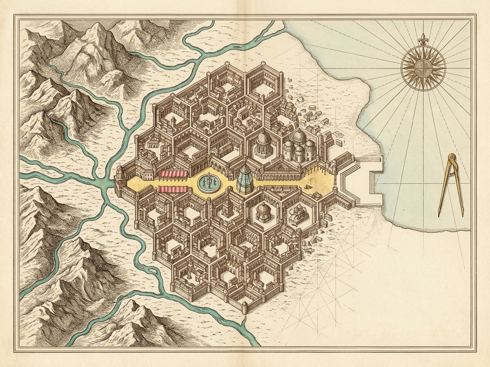
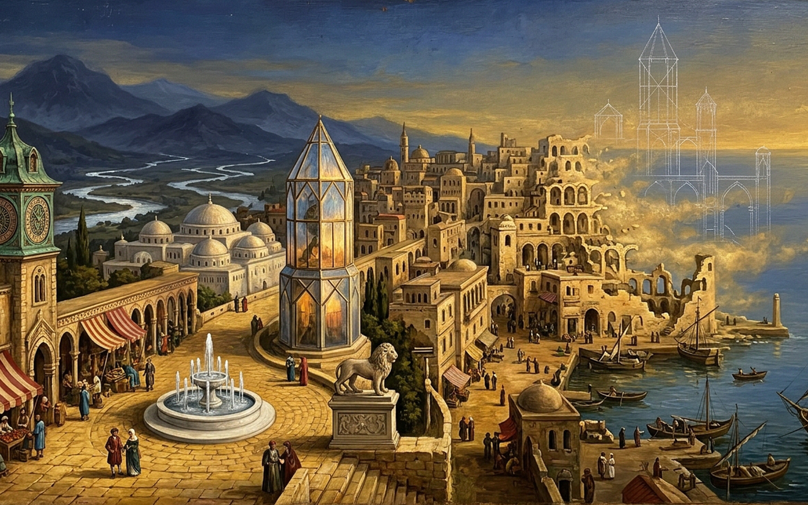

ZORAChapter I · Cities & Memory 4
Beyond six rivers and three mountain ranges rises Zora — an unalterable nine-locus musical score & Ars-Memoriae honeycomb.
Topography & Mode6 Rivers · 3 Ranges · D DorianStreet Score0 / 9 Notes · Next IInvariance0 / 9 Cells LockedEarthly Stone100% · Living Pulse
Fol. VIIr · Six Rivers Converging into the Nine-Locus Dorian Stave
Pulse 64 BPM · Living StoneCap. I · Zora Erased from Earth · Mental Ghost-Score Remaining
“Forced to remain motionless and always the same, in order to be more easily remembered, Zora has languished, disintegrated, disappeared. The earth has forgotten her.”
Click any silverpoint locus (I–IX) below to sound her disembodied crystal harmonics.Incipit
Beyond six rivers and three mountain ranges rises Zora. Walk Locus I (The Copper Clock, D4) to enter her unalterable street score.
I–IX · Honeycomb Locus-OrganNot a single note may be altered or displaced
Select or walk Locus I (The Copper Clock) in strict sequence; pin scholarly tokens by Affinity or Contrast to test how invariance weathers Zora’s stone.
Scholar’s Reliquary · Ars MemoriaeActive relic ready for [B] or walked-cell pin
Tabula VII · Chorographia Zorae & Effigies Urbis

Chorographia plate (map.png · 1600×1200) — archival copperplate impression pending on disk.
Chorographia Zorae (map.png · 1600×1200) — Six rivers descending three mountain ranges into Zora’s interlocking honeycomb alveoli and unalterable nine-locus street score (I Horologium Cupreum → IX Angiportus ad Portum).

City illumination (image.png · 1600×1000) — archival painting pending on disk.
Effigies Urbis Zorae (image.png · 1600×1000) — Held motionless and invariant so the world’s most learned men can remember every stone, earthly Zora languishes and dissolves into wind-scoured ash while her crystal ghost-score endures.